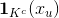
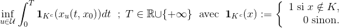

Florian Miralles
Applied Mathematics student

Applied Mathematics student
The goal of this work has been to find numericaly solution of time crisis problem with the Lotka-Volterra's dynamic. Time crisis problem is an optimal control problem consisting to minimise the time wich the nominal trajectory take outside a convex closed set K given. There is a not classic problem because the integrand equal to : , is discontinuous at the time wich nominal trajectory go from K to complementary of K. The time crisis is the result of this optimal control problem :
The most part of my job consited to resolve numericaly time crisis problem (associeted to Lotka-Volterra dynamic ) by augemented Lagrangian. This method is different than the others methods based on regularisation.